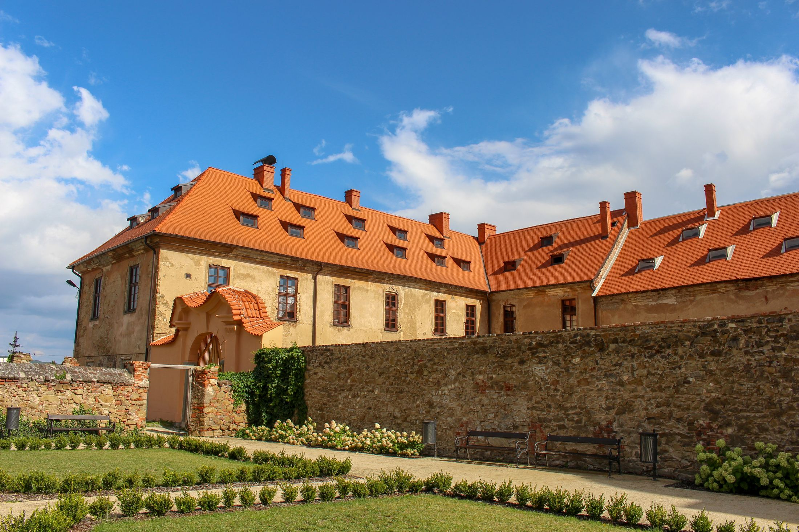
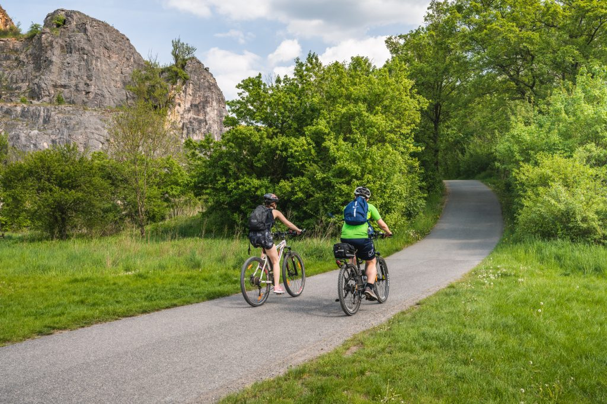
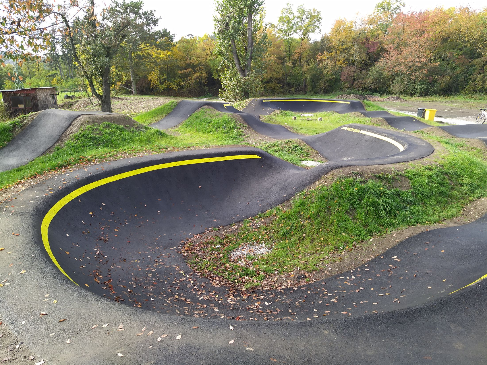
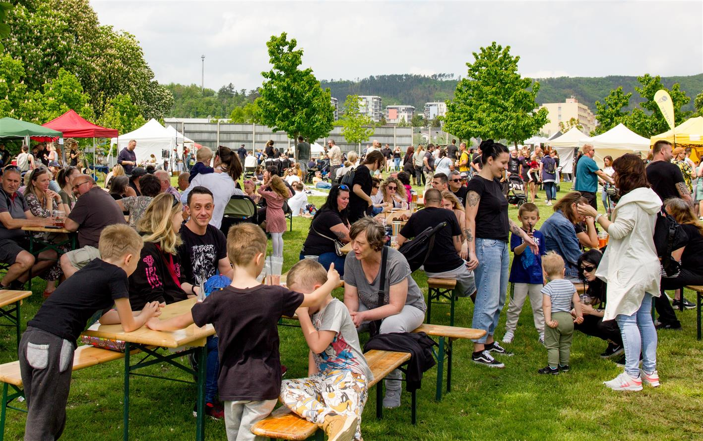
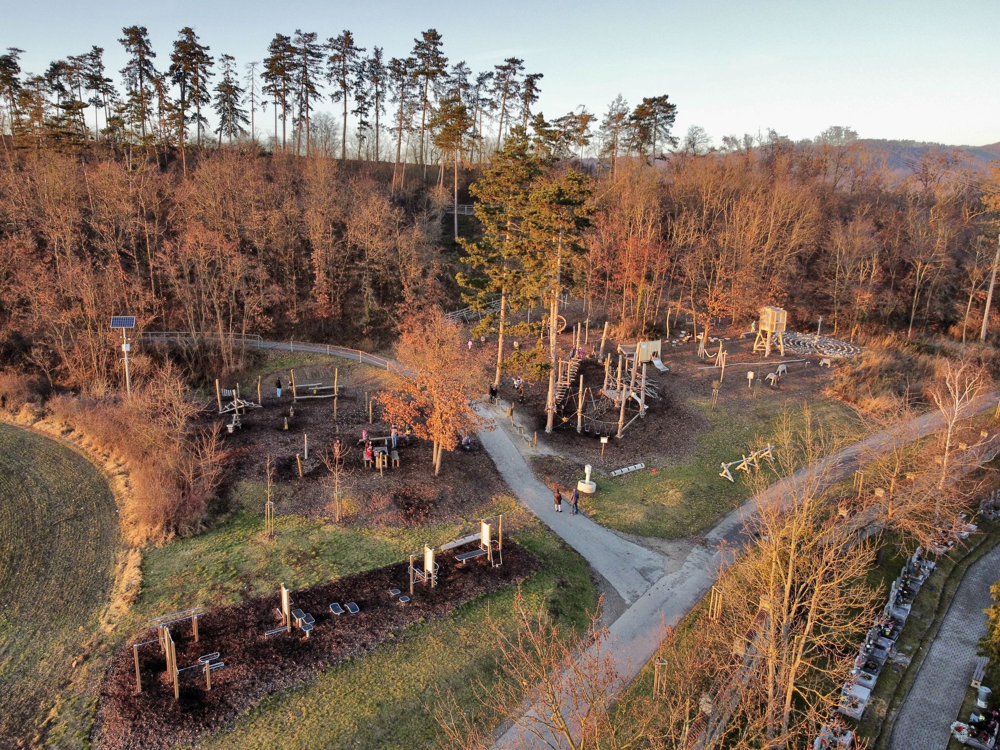

V srdci Králova Dvora se nachází naše půvabná městská knihovna, která vás zve k objevování fascinujícího světa literatury. Otevřená všem věkovým kategoriím, knihovna je místem spojení s příběhy, vzděláním a kulturou. Poskytuje klidné prostředí pro čtení a studium, ať už si vyberete klasickou beletrii nebo moderní literaturu. Občas se zde konají i výstavy. Pokud by jste měli zájem podívat se jaká výstava zde aktuálně je, navštivte web městské knihovny Králův Dvůr.
Otevřete své srdce cyklistice a objevte malebné kouty okolo Králova Dvora prostřednictvím naší rozsáhlé sítě cyklostezek. Tyto trasy nejen nabízejí fyzickou aktivitu, ale také vás provedou krásnou krajinou a přírodními památkami. Bez ohledu na úroveň dovedností zde najdou cyklisté své ideální místo k odreagování a prozkoumání okolí. Nejznámější cyklistická trasa je cyklostezka Po stopách českých králů, která se postupně táhne z Dobřichovic až do Křivoklátu.
Pro náruživé cyklisty a milovníky adrenalinu máme připravenou pumptrack dráhu, kde mohou zdokonalovat své dovednosti a zažít neopakovatelné jízdní zážitky. Dynamické terény a oblouky dráhy poskytují nezapomenutelné okamžiky plné vzrušení a radosti z rychlé jízdy. Překážky a skoky na dráze poskytují výzvu pro všechny úrovně dovedností, ať už jste začátečník nebo zkušený jezdec. Pumptrackovou dráhu můžete nalézt v Levíně u sběrného dvora. Staňte se součástí cyklistické komunity v Králově Dvoře.
Rozvíjející se kulturní scéna v Králově Dvoře přináší neustálé vzrušení a radost ze společných zážitků. Každoročně pořádáme různé kulturní akce a festivaly, od hudebních koncertů po filmové projekce. To vše vytváří pestrý kalendář akcí pro naše občany i návštěvníky, kteří chtějí zakusit místní atmosféru. Prožijte setkání s umělci a tvůrčími jedinci, kteří přinášejí do našeho města živou atmosféru plnou radosti z kulturního dění.
Pro naše nejmenší občany jsme vytvořili bezpečná a zábavná dětská hřiště, kde mohou rozvíjet svou kreativitu a sociální dovednosti. Moderní herní prvky a atraktivní design hřišť poskytují dětem příležitost ke hravému učení a radostnému strávení volného času v příjemném prostředí. V našem městě se nachází i jedno lanové centrum, které bylo můžete nalézt na pokraji lesa za kostelem. Jeho součástí je i venkovní posilovna.
